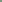
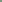
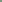

**Computer Graphic - Final Report**
Student Name: Yuhang Qiu, Zehang Qiu
Legi Number: 22-739-783(YQ), 22-739-809(ZQ)
# Motivation
The motivational image we have chosen is a creation generated by Stable Diffusion+ControlNet.
This image, crafted by the Twitter user MrUgleh in September, features a distinct checkerboard
pattern. Despite the initial appearance of weirdness, upon closer examination, each square
reveals a sense of order and coincidence.
Reporter: Yuhang Qiu
# Implementation
Feature List
5 pts - Modeling mesh
5 pts - Object instancing
5 pts - Addictional emitter: distant light
5 pts - Intel denoising
10 pts - MipMaping
15 pts - Environment map emitter
15 pts - Realistic camera model
## 5 pts Modeling Mesh
To achieve the sense of order and coincidence in a picture, we need to select proper objects and place them in the correct direction and position.
And in some of the cases, we need to modified a little bit on the objects to generate a perfect division in vision.
I have been working in blender by doing translating, rotating, scaling, and model modification on models, camera, and the light source in the scene,
to make the whole picture to achieve the effect that we expected under the effect of light and shadow.
I also build a grid framework to help me adjusting object in the camera view.
Then with the help of Blender Add-ons Nori-exporter, I can export the modified meshes and a raw XML describing the well designed scene.
But the textures are excluded so we need to attach the texture on object manually.
## 5 pts Object Instancing
**Related source file: **
include/nori/instanct.h
include/nori/reference.h
include/nori/shape.h
src/reference.cpp
src/instance.cpp
src/scene.cpp
According to the Issue#107 nori-base-23 I decided to create two new subclass of shape,
representing reference and instance thus we can directly add them into xml.
And the instance object only carries transformation from local(reference) to the world, which can be set within xml.
All the intersections to be happen with this type of shape as well as the intersecections recording is processd is in a local(reference) coordinate.
**reference.h & reference.cpp**
A simple copy of shape, to store reference object and local infomation.
**instance.h & instance.cpp**
The class representing instance. The shape-methods are overrided, to map the ray into local coordinate,
and setHitInfo in local coordinat. After that turn the HitInfo back to the world coordinat.
**scene.cpp & shape.h**
Modified and added some functions to support the instancing system.
According to the book pbrtv3, these two emitters are infinite emitters.
They are emitting light from a super far distant as identify. And they don't have solid objects exist in the scene.
So when calculating their light contribution in intergrator, we need to go in another way, because it is impossible for the path tracing light to hit these emitter without entities.
And these emitters need to provid their special eval method.
**emitter.h**
Add Le() method to be overrided in infinite emitters subclass.
**distantlight.cpp**
All the light can be seem as parallel since they come from far far away(like sunlight). So the init parameter would be irradience and direction.
when being sampled, return m_radiance and set light m_directoin directly.
And the eval() function should return the intergration of the light irradience witin the scene bounding area.
Like the implementation of pointlight, pdf() return 1.0 .
Distant light contribution can be collect as a random emitter in getRandomEmitter() in emitter sampling part, and simply contribute its radience by calling sample().
**envlight.cpp**
A kind of light is an infinitely far-away area light source that surrounds the entire scene. It support user to attach environment texture on it.
The way it sampling light is performing a pipeline from sampling point in uv map into the light direction that hit the scene.
To do sampling in uvmap we need to compute the sample weight of each pixel on map, so the first work is to precompute the PDF map of the uvMap
by the radience that the pixel carries. Then we can perform weighted sampling on the uvMap,
to achieve the effect of the brighter a area is, the more possible the area would emitting light.(like the light source in the environment)
Then perform the transformation from uv Coordinate, to sphere Coordinate then to the query direction in world coordinate.
And return the interpolated radience(color) in the vuMap with corresponding pdf.
**path_mis.cpp**
Because the light would never hit these two emitters, so the old intergrator will never have mats term contribution, and the part that doesn't hit any object would remain black.
So I add two way to fit these emitters. One is when the tracing ray doesn't hit any object and escape the scene, it can be seem that it hit the covering environment emitter shpere.
We need to query the color with the escaping ray Rec in the new Emitter method Le(Rec)
And when doing Emitter sampling, these emitter should be seem as normal emitters to being smapled, so we just need to make sure the sample() result is correct.
## 10 pts MipMaping
**Related source file: **
include/nori/ray.h
include/nori/shape.h
src/mipmaptexture.cpp
src/path_mis_mip.cpp
src/mesh.cpp
src/perspective.cpp
**mipmaptexture.cpp**
According to the book pbrtv3, mipMap should be intergrated in imageTexure,
and the new class be able generate all level of mipmaps and provide interface to query color in different level mipmap.
So I write a generateMipmap() function and will be call when a imageFile is loaded.
It calculate the max level by log2(MaxResolusion), and create higher level of Mipmap with half of resolution compared to the lower level both in height and width, by averaging the 4 neighbor pixel color into one pixel to the next level.
When being query, it take the differential value L to culculate the Mipmap level and perform trilinear interpolation to compute the color between level and level+1.

**ray.h**
Add rayDifferential variable as pbrtv3 to ray Class.
**perspective.cpp**
Add genertateRayDifferential as pbrtv3 introduce.
The RayDifferentials are generated by finding the Raydifferential in 1px offset in x and y direction of the camare film.
Need to perform the transformation from clip coord to camara coord then to world coord.
**shape.h, mesh.cpp**
Add RayDifferentials related variables in Interscetion structure to record differentials along uv, xy, on hitting point p.
When mesh being hit, compute the differential value(changing rate from clip coord to world coord) in setHitInfomation().
**path_mis_mip.cpp**
Pass the differential value inside Interscetion into the mipMap query to get the color.
Unluckly I coudn't find the camera figure when I create the Level_distribution img... Thus I adjust for a while but still failed align them again..
## 15 pts Realistic camera model
**Related source file: **
src/realistic.cpp
src/toBeRealistic.cpp
I thought realistic is a super complex concept and is challenging. So I decide to implement advanced camera the thin lens model first.
In realistic.cpp, we need to sample point on the 'lens', then use Gaussian lens equation to compute the focus point where sampled ray and central ray intersect,
and finally to get the sampled ray from the sampled point on 'lens'.
However, due to the time limit, I haven't finish implementing the real realistic camare model.
What I have got so far are the code imitation from pbrtv3, implementation of helper function and lens data loading in toBeRealistic.cpp.
## 5 pts Intel Denoise
I faild to implement it because of the importing issues. I'v spent too much time on it but still get no result so i finally decided to give it up.

 The motivational image we have chosen is a creation generated by Stable Diffusion+ControlNet.
This image, crafted by the Twitter user MrUgleh in September, features a distinct checkerboard
pattern. Despite the initial appearance of weirdness, upon closer examination, each square
reveals a sense of order and coincidence.
The motivational image we have chosen is a creation generated by Stable Diffusion+ControlNet.
This image, crafted by the Twitter user MrUgleh in September, features a distinct checkerboard
pattern. Despite the initial appearance of weirdness, upon closer examination, each square
reveals a sense of order and coincidence.
 
